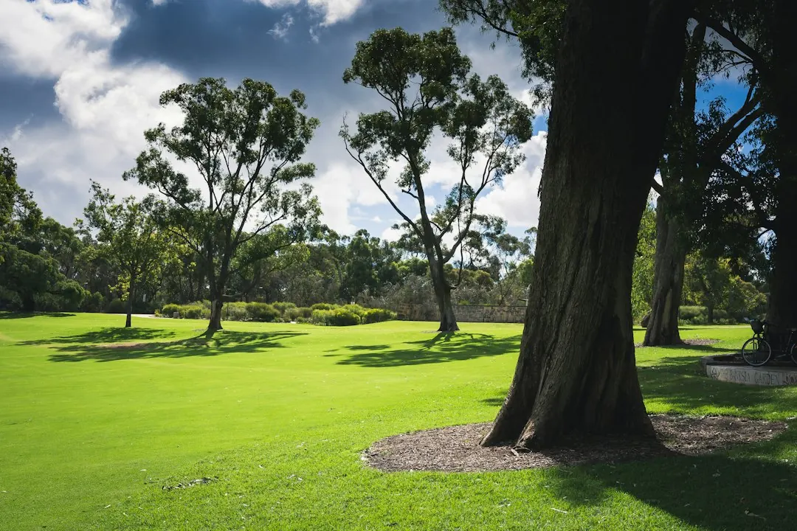

Perth landscaping costs and outcomes depend on access, soil preparation, levels, materials, hardscape and water planning. Sandy ground can drain quickly and repel water when dry, so ask how soil conditioner or organic matter will be used before planting or turf. Compare quotes line by line, including reticulation zones, paving bases, retaining requirements and approval questions. A clear site brief makes competing proposals easier to assess.
For homeowners comparing landscaping services perth options, the practical decision is how the garden, ground conditions, water supply and construction details fit together before a quote is accepted.
Landscaping Services Perth Explained
The Landscapers Perth website describes a local job as more than planting and turf. Access, slope, shade, existing trees, rough area and water supply all affect the design and the work required. Record these details before asking for prices, and add photos or plans if they are available.
Perth sand is a key site variable. It drains quickly, may hold little nutrient and can repel water after drying out. Ask whether garden beds and turf areas need soil conditioner or organic matter, how planting areas will be prepared, and whether the proposed grass suits the available sun, shade and watering conditions.
Access deserves its own question. A narrow entry, limited machinery access or a sloping block can change excavation, removal and material handling. A quote that states its access assumptions is easier to compare with another quote than a single unexplained total.
Match the service to the decision
Different parts of a garden require different decisions. Landscape design is useful when the layout, plants and hard surfaces need to be resolved before construction is priced. A full garden makeover may combine beds, turf, plants, mulch and edging. Lawn installation focuses on prepared ground and grass selection, while paving and hardscaping depend on a firm, well drained base.
Reticulation should be planned around how the garden is divided. Lawns and garden beds may need separate zones, and the design can involve a controller, rain sensors and either bore or scheme water. Ask for the zones to be shown before turf, paving and mulch are installed, because access to the ground changes once those elements are finished.
Artificial grass is a separate choice from real turf. Compare the intended use, preparation work, appearance, watering expectations and ongoing upkeep rather than treating the two options as interchangeable.
- Choose design help when the layout and materials are still uncertain.
- Choose a construction quote when the scope, surfaces and preparation are defined.
- Ask for irrigation zones and water source assumptions in writing.
Read retaining and paving quotes closely
Sloping or sandy blocks may require retaining before other garden work can proceed. The website identifies limestone and block retaining as options for holding levels, but the right choice depends on the site, the required height and the boundary arrangement. Ask whether permits or engineering need to be checked with the local council.
A wall near a shared boundary also creates a neighbour question. Clarify where the wall sits, who is responsible for boundary discussions and what documents are needed before construction. Those checks belong in the early scope, not after materials have been ordered.
Paving, patios, paths and pool surrounds need a firm, well drained base. Ask what excavation, compaction and preparation are included. On sandy ground, the base specification can be a more useful comparison point than the surface material alone. Make sure the quote identifies demolition, levels, edging, drainage assumptions and finishing work where those items apply.
Compare proposals on the same scope
Two landscaping quotes are only comparable when they describe the same job. Give each provider the same suburb, rough dimensions, access information, photos and preferred features. Ask each proposal to separate preparation, materials, installation and any items that remain undecided.
Check whether the price includes soil improvement, turf preparation, reticulation pipes and controller work, paving bases, retaining, removal of existing material and final clean-up. If a line is absent, ask whether it is excluded or simply not itemised. A lower figure may reflect a narrower scope rather than a different rate for the same work.
For maintenance or small tidy-ups, an hourly arrangement may be appropriate. Construction is usually quoted as a whole job, while maintenance needs can change through spring growth and summer reticulation checks. Ask how visit length and frequency would be set for the garden being considered.
Who this guide applies to
This guide is for Perth homeowners planning a new lawn, artificial grass, garden makeover, paving, retaining wall or reticulation work. It is also relevant when a bare block, sandy soil, slope or water-source question makes a standard garden quote difficult to interpret.
The examples cover different site questions rather than a universal suburb rule. Coastal locations such as Cottesloe and Scarborough may involve salt wind, Kalamunda is associated with hills and slopes, and newer estates such as Baldivis or Ellenbrook may begin with bare builder's sand. Use the condition that matches the property, then ask how it changes preparation and materials.
Before accepting work, ask which licences and insurance cover the particular job, request current certificates, and confirm that specialist parts, such as bore reticulation or retaining near a boundary, are handled by appropriately licensed professionals. The website also identifies Joondalup, Applecross, Mosman Park, Armadale, Rockingham, Mandurah, Success, Canning Vale, Wanneroo and Bassendean among its areas.
For a separate planning reference, compare this guide with the Perth landscaping cost guide, then return to the site-specific questions above when reviewing a quote.
- Define the job. Choose the main outcome, such as a makeover, lawn, paving, retaining wall, artificial grass or reticulation.
- Inspect the site. Record suburb, rough size, slope, access, shade, existing trees and whether water comes from a bore or scheme supply.
- Check approvals. Ask the local council about permits and engineering where retaining, levels or a shared boundary may be involved.
- Compare like for like. Check that each quote lists preparation, materials, zones, bases, retaining and exclusions on the same scope.
| Choice | Best question to ask | Main comparison point |
|---|---|---|
| Landscape design or construction quote | Is the layout still being decided? | Design resolves layout, plants and hard surfaces; construction prices defined work. |
| Real turf or artificial grass | What use, watering and upkeep suit the site? | Compare preparation, ongoing care and watering expectations. |
| Limestone or block retaining | What levels, boundary conditions and approvals apply? | Compare the site requirement, documentation and construction scope. |
Common questions
Why can landscaping prices vary across Perth? Site access, soil preparation, levels, materials and hardscape all affect the work. Sand may require soil improvement for beds and turf, while sloping blocks may need retaining first.
Should reticulation be installed before turf and paving? The website says pipes are best laid before turf, paving and mulch. Ask for lawn and garden-bed zones, the controller and the water source to be identified in the plan.
What should a retaining quote include? Ask whether the quote covers the proposed wall type, excavation, levels, engineering or permit checks, and boundary-related questions. The local council should be consulted where approvals may apply.
Is landscaping charged hourly or by the job? Construction work is usually quoted as a whole job, while hourly rates suit maintenance and small tidy-ups. Ask how visit length and frequency would change for the garden.
What should be checked before hiring? Ask which licences and insurance apply to the particular work, request current certificates, and confirm that specialist parts are handled by appropriately licensed professionals.
This guide covers Perth garden planning, site conditions, service choices, quote comparisons and approval questions.